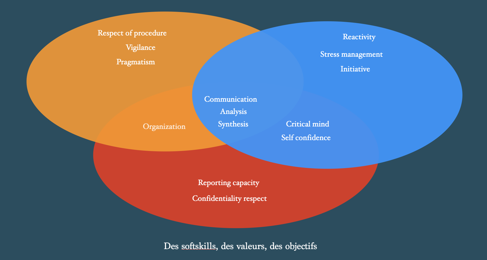

Notre métier.
Au service du
cycle de vie RH.
Major Exchanges fournit aux équipes RH une plateforme d'évaluation, une méthodologie d'analyse en cinq niveaux et la formation associée. Le tout couvre l'ensemble du cycle de vie collaborateur — recrutement, intégration, mobilité, coaching, management.
L'outil structure l'entretien et produit un livrable objectif (rosace, analyse écrite, matrice des 48 requis). La décision finale reste celle de l'expert RH, mieux informée et plus comparable d'un dossier à l'autre.

Comprendre les dynamiques collectives.
La force d'une équipe ne tient pas à l'addition de ses individualités, mais à la qualité de leurs interactions. Major Exchanges produit une lecture des complémentarités, des points de friction et des leviers de cohésion.
Recrutement, mobilité, intégration, coaching et management se nourrissent ainsi d'une cartographie partagée — entre l'individu, ses pairs et son environnement de travail.
Un seul outil,
cinq usages.
Recrutement
Évaluation des candidats sur les 48 requis définis pour le poste. Réduction du risque d'erreur d'interprétation.
Évolution
Identification des potentiels internes. Accompagnement des transitions de poste et des prises de responsabilité.
Mobilité
Analyse de l'adéquation entre une individualité et un nouvel environnement. Anticipation des points de vigilance.
Coaching
Support structuré pour les missions de coaching individuel. Cartographie précise des leviers de développement.
Mentoring & Management
Construction d'équipes complémentaires. Mentoring structuré. Optimisation par valorisation des différences.
Comprendre · Valoriser · Dynamiser.
Au-delà de l'étude, un mode d'action. Trois principes guident toutes nos interventions.
Objectif
Étude améliorée. Adéquation optimisée entre une individualité et son environnement. Décisions RH mieux informées.
Simplicité
Facilité d'exécution. Souplesse d'utilisation. Une méthodologie robuste qui ne sacrifie jamais la praticité sur le terrain.
Action
Mise en confiance. Échange valorisé. Suivi optimisé. Moyens de progression identifiés et partagés.
Aux côtés des
experts RH.
Major Exchanges s'adresse aux DRH, responsables recrutement et mobilité, consultants RH indépendants, coachs certifiés et cabinets de conseil qui mènent des évaluations comportementales pour leurs clients ou leur organisation.
La méthodologie ne se substitue pas au jugement de l'expert : elle l'outille. Les utilisateurs restent pleinement propriétaires de leurs conclusions et de la restitution faite à leur direction ou à leur client final.
L'outil pour les experts →